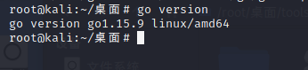
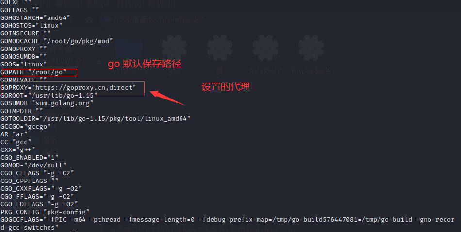
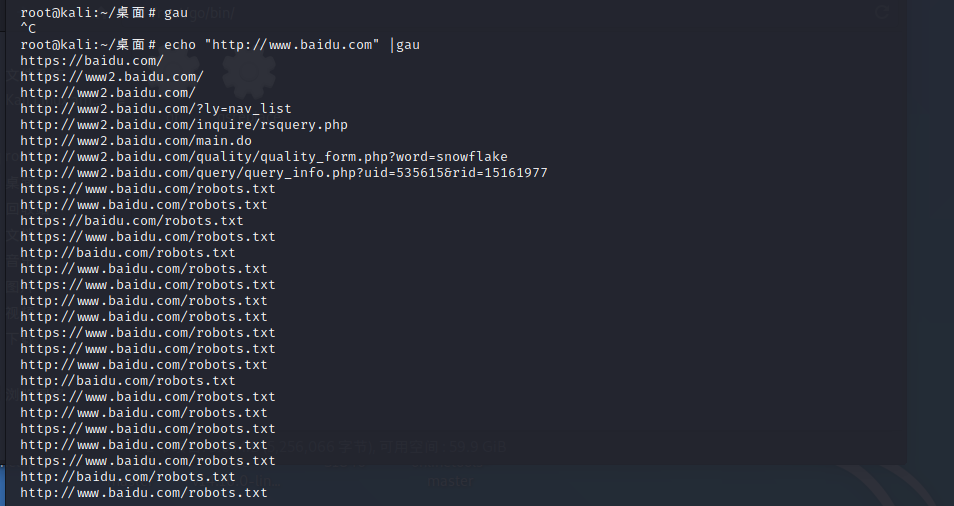
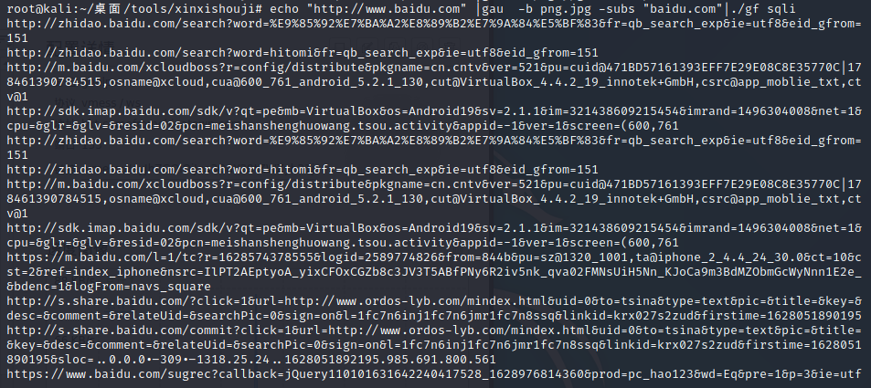

使用工具筛选sql注入链接
前言
本文采用了三个github小工具组合筛选出可能存在sql注入的链接地址，方便对sql注入漏洞直接进行检测，以下工具需要使用go环境进行编译运行，请小伙伴自行下载，或者采用KALI系统（自带）进行运行。下面开始介绍！
GO设置代理
由于go原生下载环境访问github等地址速度较慢，所以可以采用设置代理的方式进行访问。
1.使用 go version 指令获取go的版本信息

go 的版本在1.13以上版本时，可使用以下命令继续设置代理
1 | go env -w GO111MODULE=on |
其他版本
1 | export GO111MODULE=on |
取消代理
1 | go env -u GOPROXY |
最后可通过 go env 指令查看 代理是否已经设置成功
工具一 GAU
工具地址：https://github.com/lc/gau
工具功能：枚举指定界面的所有的url链接。
工具下载： 使用命令
1 | go get -u -v github.com/lc/gau |
下载gau脚本，脚本的存放地址是go在配置中设置的默认存放地址，可通过 go env命令查看

在bin目录下存在gau可执行文件，在该文件夹下执行以下命令，建立软链接（可选）
1 | ln -s $(pwd)/gau /usr/local/bin/gau |
也可以直接在gau文件同级目录下执行即可
工具的使用这里只做简单介绍，可自行研究
基本使用
1.获取指定URL的所有相关的链接
1 | echo "http://www.baidu.com" |gau |

2.获取指定域名以及子域名下的所有链接 参数 -subs
1 | echo "http://www.baidu.com" |gau -subs "baidu.com" |
即可获取所有的链接地址
3.排除图片等文件地址
使用 -b 参数排除不要的图片文件地址
1 | echo "http://www.baidu.com" |gau -b png.jpg |
4.日常使用
可组合以上命令对文件进行筛选
1 | echo "http://www.baidu.com" |gau -b png.jpg -subs "baidu.com" |
这里我们获取了所有的链接地址，那么如何获取带有参数的URl地址呢？
上工具
工具二 GF
工具地址：https://github.com/tomnomnom/gf
工具功能：通过正则的方式提取出所需要的数据
辅助工具：https://github.com/1ndianl33t/Gf-Patterns ，该脚本是GF工具已写好的正则配置，我们可以直接使用
工具安装：
1.安装GF
go get -u github.com/tomnomnom/gf
安装位置默认也是go的默认保存位置，下面不在赘述
小坑：
下载完成后需要使用以下命令在根目录下创建.gf 文件夹，否则将无法使用
mkdir ~/.gf
2.下载GF-patterns
可以通过命令进行下载
1 | git clone https://github.com/1ndianl33t/Gf-Patterns |
如果无法下载也可以直接访问该github地址进行下载，如何访问github请自行解决。
下载完成后进行到 GF-Patterns目录上一级，执行以下命令将该文件夹内所有内容转移到 .gf文件夹下，供gf脚本进行调用
1 | mv ./Gf-Patterns/* ~/.gf/ |
至此工具二就安装完毕
提取链接地址
GF工具使用非常简单，只需要在.gf文件夹下放置对应的配置文件即可直接调用
例如我们想要获取所有带有参数的所有链接,可通过以下命令进行筛选
1 | echo "http://www.baidu.com" |gau -b png.jpg -subs "baidu.com"|./gf sqli |

即可提取所有链接地址
可将所有的文件保存到txt中，供工具三使用
1 | echo "http://www.baidu.com" |gau -b png.jpg -subs "baidu.com"|./gf sqli > sqli.txt |
工具三 qsreplace
工具地址：https://github.com/tomnomnom/qsreplace
工具功能：去重URL，替换url参数值为固定值
安装方式：
使用go进行安装
1 | go get -u github.com/tomnomnom/qsreplace |
最终是qsreplace可执行文件
工具使用：
前面我们通过工具二获取了sqli.txt文本，这里我们可以利用该工具对文本继续处理，获取最终去重后的URL地址
1 | cat sqli.txt | qsreplace fuzz > duplicateremove.txt |
至此url处理完成，可以愉快的玩耍了！
命令总结
1 | echo "https://example.com" | gau -b png,jpg -subs example.com > sqli.txt |